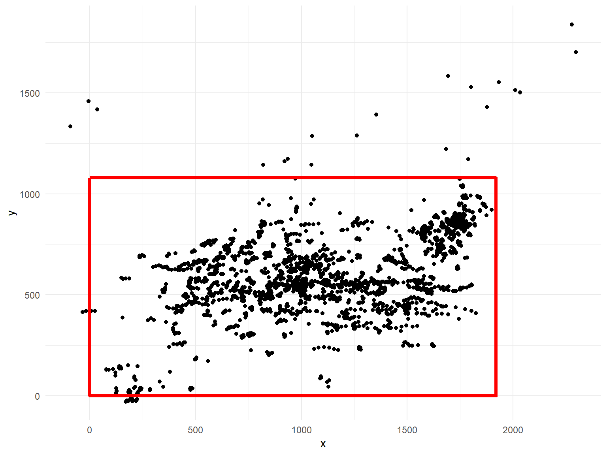
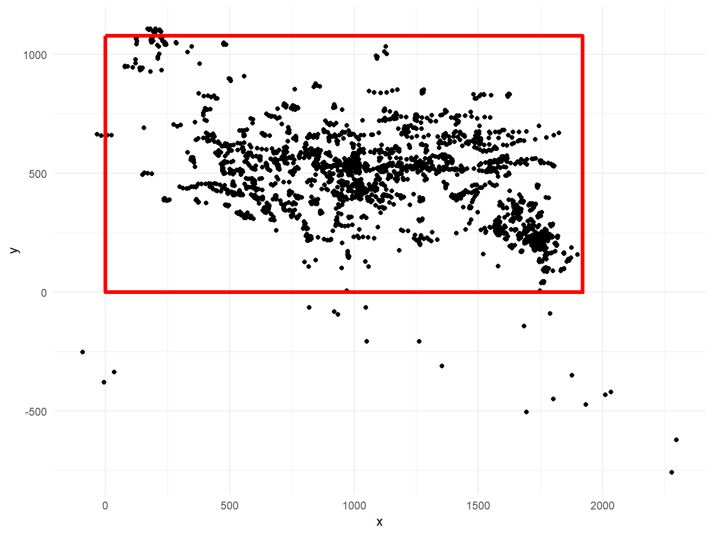

Loading and saving
Lukáš ‘hejtmy’ Hejtmánek
2019-09-18
loading-saving.RmdEyer allows for saving data in a predefined structure and then loading them from passed folder. The package comes with both eyer_data object for testing and demosntrations, but also with raw data you can look at and test loading. It is generally installed into system.file("extdata", package = "eyer") system folder.
## Loading required package: ggplot2## Registered S3 methods overwritten by 'ggplot2':
## method from
## [.quosures rlang
## c.quosures rlang
## print.quosures rlang## Loading preprocessed fixations log at C:/Users/hejtm/Documents/R/win-library/3.6/eyer/extdata/test_eyer_fixations.csv## Loading preprocessed gaze log at C:/Users/hejtm/Documents/R/win-library/3.6/eyer/extdata/test_eyer_gaze.csv## Loading preprocessed diameter log at C:/Users/hejtm/Documents/R/win-library/3.6/eyer/extdata/test_eyer_diameter.csv## Loading preprocessed events log at C:/Users/hejtm/Documents/R/win-library/3.6/eyer/extdata/test_eyer_events.csv## Loading preprocessed info log C:/Users/hejtm/Documents/R/win-library/3.6/eyer/extdata/test_eyer_gaze.csv## List of 2
## $ data:List of 4
## ..$ events :'data.frame': 1 obs. of 3 variables:
## .. ..$ time : int 126353
## .. ..$ action: Factor w/ 1 level "KEY_UP": 1
## .. ..$ name : Factor w/ 1 level "l": 1
## ..$ fixations:'data.frame': 378 obs. of 4 variables:
## .. ..$ duration: int [1:378] 377 200 147 306 141 208 356 145 234 233 ...
## .. ..$ x : num [1:378] 1762 1804 1844 905 674 ...
## .. ..$ y : num [1:378] 881 910 917 610 628 ...
## .. ..$ time : int [1:378] 390 777 984 1198 1530 1829 2051 2439 2593 2833 ...
## ..$ gaze :'data.frame': 130000 obs. of 3 variables:
## .. ..$ x : num [1:130000] 1720 1720 1720 1721 1722 ...
## .. ..$ y : num [1:130000] 848 847 845 843 843 ...
## .. ..$ time: int [1:130000] 0 1 2 3 4 5 6 7 8 9 ...
## ..$ diameter :'data.frame': 130000 obs. of 2 variables:
## .. ..$ time : int [1:130000] 0 1 2 3 4 5 6 7 8 9 ...
## .. ..$ diameter: int [1:130000] 847 846 845 847 850 850 848 846 846 845 ...
## $ info:List of 3
## ..$ start_time: int 8123762
## ..$ resolution:List of 2
## .. ..$ width : int 1920
## .. ..$ height: int 1080
## ..$ eyetracker: chr "Eyelink 1000"
## - attr(*, "class")= chr [1:2] "list" "eyer"The eyer object then allows us to do some quick operations and visualisations
## Warning: Removed 36 rows containing missing values (geom_point).
As this data comes from eyelink 1000 eyetracker, the anchor is in top left, whereas we want to plot it with 0,0 begin in the bottom left. So we needd to flip the Y axis to the 1080 value.

and after we are finished, we can save the data again
## [1] "preprocessed_eyer_diameter.csv" "preprocessed_eyer_events.csv"
## [3] "preprocessed_eyer_fixations.csv" "preprocessed_eyer_gaze.csv"
## [5] "preprocessed_eyer_info.json"We can then load the data and continue with preprocessed flipped data
